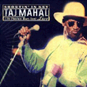
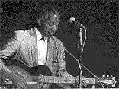

Экстраординарный традиционалист и ветеран американского блюзового возрождения Тадж Махал выпускает концертный альбом, записанный в известном джаз-блюз-клубе Лос-Анджелеса "The Mint" (Джимми Уизерспун при участии Робена Форда записал здесь же свой последний альбом). С Таджем Махалом играют на записи: известный техасский гитарист Денни Фримэн (Denny Freeman), давний партнер Таджа Махала и Джимми Воэна; барабанщик (и со-продюсер на записи) Тони Бронагел (Tony Braunagel), работавший с Бонни Райт; и замечательный техасский же дуэт "Тексекали Хорнз" (Texacali Horns), который так же работал с обоими братьями Воэн. Альбом получил название "Вопя в тон" (Shoutin' in Key) и включает в себя много песен из классического блюзового репертуара - в отличие от предыдущих новейших работ Таджа Махала, которые были посвящены то кубинской, то карибской, то малийской народной музыке; к тому же эти альбомы тяготели к акустическому звучанию, а новейший возвращает в рок-блюзовому составу, вроде "Райзинг Сонз", в которой он дебютировал. Все по кругу...
Запись домашнего концерта Лонни Джонсона 1970 года, сделанную незадолго до его смерти в возрасте 70 лет, выпускает Blues Magnet. Л.Джонсон был ярчайшей звездой джазовой и блюзовой гитары второй половины 20-х и 30-х годов, выступал как солист и участвовал в ансамблях Луи Армстронга и в оркестре Дюка Эллингтона. Безукоризненно-виртуозная игра и ярко-инивидуальный стиль Л.Джонсона сохраняют и сегодня узкий круг преданных поклонников (среди них и БиБиКинг), для которых эта публикация позднего "домашнего" музицирования станет дорогим подарком.На июнь запланирован и выпуск полупрофессиональной записи последнего концерта пианиста Отиса Спэнна, сделанной незадолго до его смерти. Альбом под прямолинейным названием "Last Call (Live at the Boston Tea Party)"-"Последний Заказ (Концерт в "Бостонском Чаепитии" - продюссирует и выпускает гитарист Питер Малик (Peter Malick), который принимал участие в джеме на этом концерте. Запись любопытна еще и тем, что Отису Спэнну, который был тяжело болен, помогает петь на концерте его жена Люсилль Спэнн. С альбомом можно будет ознакомиться в сети по адресу mrcatmusic.com., будет он будет окончательно готов.
Лейбл KingAce Music объявил о планах на издание прежде не публиковавшихся записей Уилльяма Кларка и на переиздание альбома "Tip of the Top" ("Макушка Верхушки"), в настоящее время существующего только в виниловом издании. Этот альбом вышел в 1987 году, еще до контракта У.Кларка с "Аллигатором". В его записи принимали участие такие известнейшие блюзмэны, как гитаристы Ронни Ирл и Джуниор Уатсон, и харписты Чарли Масселуайт, Холливуд Фэтс и блюз-наставник Кларка Джордж "Гармоника" Смит. Джаннет Кларк, вдова У.Кларка, принимает участие в составлении новых изданий и помогает информацией. Дополнительная информация на www.kingace.com
На конец года обанкротившаяся, но возродившаяся мемфисская фирма Stax планирует специальной издание бокссета на 3CD, посвященное памяти Джонни Тейлора, почившего в прошлом месяце. Коллекция его записей будет носить название "Lifetime" - "За всю жизнь". В нее включены как самые ранние записи Тейлора в стиле госпелл, который он сделал в группе "Soul Stirrers", заменив в ней своего учителя Сэма Кука, его хиты 70-х и более поздние работы.